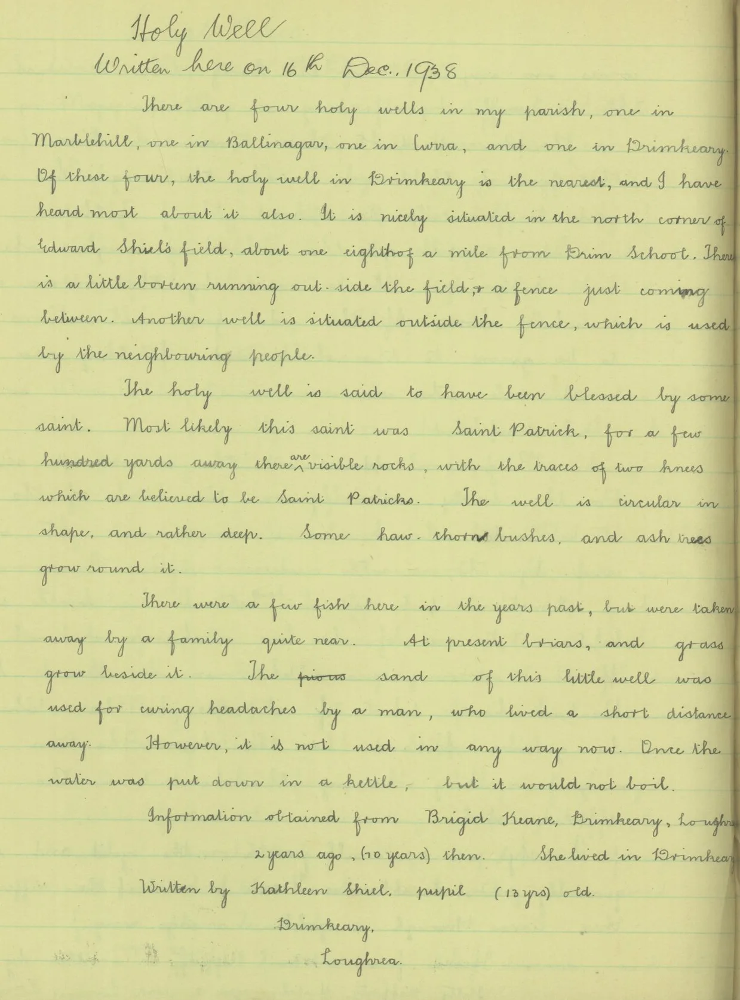

Drumkeary West
Drumkeary West in Irish “Droim Chiara Thiar” meaning Keary’s ridge west according to John O’Donovan is 489.10 acres or 197.93 hectares in size and is in the Electoral division of Drumkeary. Drumkeary is locally pronounced and spelled Drimkeary.
In the 1841 census there were 141 people and 22 houses and in the 1851 census, after the famine, the population had fallen to 72 people and 12 houses.
In 1677 the townland was part of lands granted to Richard Power of Waterford. There is a twin arch stone bridge built in 1889, reputedly at a cost of five pounds, and there are a few surviving pre-famine house ruins. There are also the remains of a ringfort at one of the highest points of the townland, with views of four counties.
Drumkeary West borders Allykeolaun, Carrowroe, Clooneen, Cullenagh, Drumkeary East, Knockaundarragh, Kylenagappa and Tooreen South.
St. Patrick’s Holy Well
In the south-eastern part of the townland there is a holy well dedicated to St. Patrick. It is a circular drystone structure about four feet across, fed by a spring, and there are rocks nearby said to bear the marks of St. Patrick’s knees. The well is on private land.
The Schools’ Collection of 1938 has an account of it, written on 16th December 1938 by Kathleen Sheil (aged 13) of Drimkeary, from information given by Brigid Keane, who was then 70.

The transcription on dúchas.ie reads:
There are four holy wells in my parish, one in Marblehill, one in Ballinagar, one in Curra, and one Drimkeary. Of that four, the holy well in Drimkeary is the nearest, and I have heard most about it also. It is nicely situated in the north corner of Edward Sheil’s field, about one eighth of a mile from Drim School. There is a little boreen running out side the field and a fence just coming between. Another well is situated outside the fence, which is used by the neighbouring people.
The holy well is said to have been blessed by some saint. Most likely this saint was Saint Patrick, for a few hundred yards away there are visible rocks, with the traces of two knees which are believed to be Saint Patricks. The well is circular in shape, and rather deep. Some haw-thorn bushes and ash trees grow round it.
There were a few fish here in the years past, but were taken away by a family quite near. At present briars, and grass grow beside it. The sand of this little well was used for curing headaches by a man, who lived a short distance away. However, it is not used in any way now. Once the water was put down in a kettle, but it would not boil.
Map
Placenames
| Name | Type | Notes |
|---|---|---|
| Bush of Sceach | tree or bush | Location not exact. This was a fairy bush. |
| Darby Shiel’s Lough | lake or lakes | |
| Gleann Luachmhar | field | Not sure of the exact location but it’s a valley around the lake. Pronounced “Glannloochwar”. |
| The Hurling Field | field | |
| The Swimming Pool | river | People used to swim here, you could block the river and and raise the pool as high as you want |
| The Island | field | The river splits around this. |
| The Long Garden | field | |
| The High Paddock | field | |
| Goirtín Cloch | field | |
| Lochaunawurs | patch of ground | Pronounced “Luckawnawurs”. |
| The Flaggy Garden | field | |
| The Clover | field | |
| Kitty’s Garden | field | |
| Goirtín Uisce | field | Very wet here, you’d go to your knees in it. |
| Tobar | field | There is a well here. |
| The Bull Field | field | |
| Lochaunnavalla Boreen | country lane, boreen | The road here is known as “Lochaunnavalla Boreen” but the land around is is probably “Lochaunnavalla” as well. |
| Golyeentubber | field | |
| Powerglas | field | Probably Poll Glas. |
| Hanrahan’s Garden | field | |
| Devine’s Field | field | |
| Locaunnavalla | field | Pat Joe Shiel used to say the area around here is “Lochaunnavalla”, this field in particular was pointed out but it might be more of them. |
| St. Patrick’s Holy Well | well | |
| Leckans | brow, slope, hillside | All of the fields along the road on this side, between the house to the west and the forestry to the east. This fields are sloped on the side of a hill. |
| The Middle Gap | gate | |
| The Coarse Place | field | |
| The Barley Field | field | Barley used to be sown here. |
| The Paddock | field | |
| The Hill | field | |
| Closhroo | field | |
| Keane’s Gullet | stream | |
| The Hurling Field | field | |
| The White Park | field | |
| Mass Path | mass path | |
| The Hills | hill or hills | This covers about 3 fields, these 2 and the one to the West (Luke’s Field). |
| Garrai Ard | field | |
| The Fort Field | field | |
| Luke’s Field | field | |
| Rogers’ Field | field | |
| Tuohy’s | field |
Houses
| Name | Notes |
|---|---|
| Shiel’s House | Fix location. |
| Norrie Murphy’s House | |
| Shiel’s House | Shiel’s, Glynn’s, Tuohys, then Glynn’s again. Tuohy all of his potatoes got blight. Got TB, went up to County Meath. Went lived with Duane’s Ballinlough before. |
Buildings
| Name | Notes |
|---|---|
| Daniel’s Shebeen | Dempsey’s kept their Sheebeen in Daniel’s house. |
| Dempsey’s Shop |